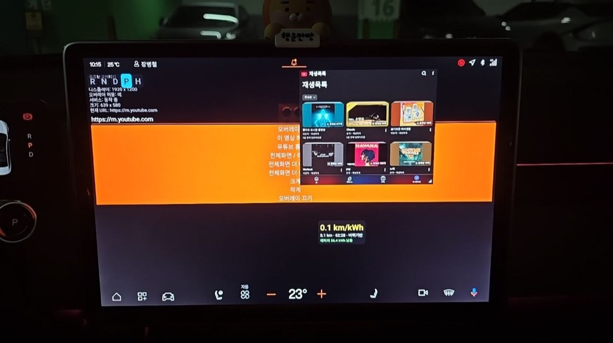

⚡ 전비 오버레이 (트립)
주행 거리 · 전비(km/kWh) · 배터리 를 화면에 띄워 주는 오버레이입니다.
이 앱은?
"이번 주행 동안 전비가 얼마나 나왔지?"를 실시간으로 보여줍니다. 바퀴 회전에서 거리를 계산해, 계기판보다 세밀하게 주행 효율을 볼 수 있습니다.
주요 기능
- 바퀴 회전 기반 주행거리 / 전비(km/kWh) 실시간 표시
- 배터리 잔량(kWh) 표시
- 정차 중에도 초기화·재계산 가능
사용법
- 앱 실행 → 오버레이 켜기 → 헤더 드래그로 이동, 핀치로 크기 조절
기술 포인트
- 거리 우선순위: 오도미터 → 바퀴(WHEEL_TICK) → 속도 적분 (권한/가용성에 따라 자동)
- 전비 = 주행거리 ÷ 사용 전력, 정차 중엔 공조 전력만 소모되어 낮게 나옴
스크린샷


💬 댓글